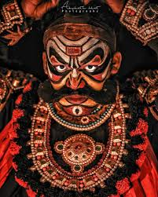

Exploring the Charm of Kudla
Yakshagana: The Coast’s Most Dramatic Nightlife If Goa has clubs and Kochi has cafés, coastal Karnataka has something louder, rawer, and far more human — Yakshagana. It’s the region’s own form of nightlife, except instead of strobe lights, you get pounding drums; instead of DJs, you get singers who can hold a note longer than your phone’s battery; and instead of influencers, you get actors painted in colors brighter than sunrise. Watching Yakshagana isn’t a “cultural activity.” It’s a chaotic, emotional, unfiltered coastal experience — and if you’re traveling through Mangalore, you owe it to yourself to see at least one show.
Must-Visit Spots
- Panambur Beach
- St. Aloysius Chapel
- Pilikula Nisargadhama
Local Delicacies
Don’t miss out on Neer Dosa, Mangalorean Fish Curry, and Goli Bajje. The flavors are unforgettable!
Comments
Lovely post — Yakshagana sounds incredible. Thanks for the vivid write-up!